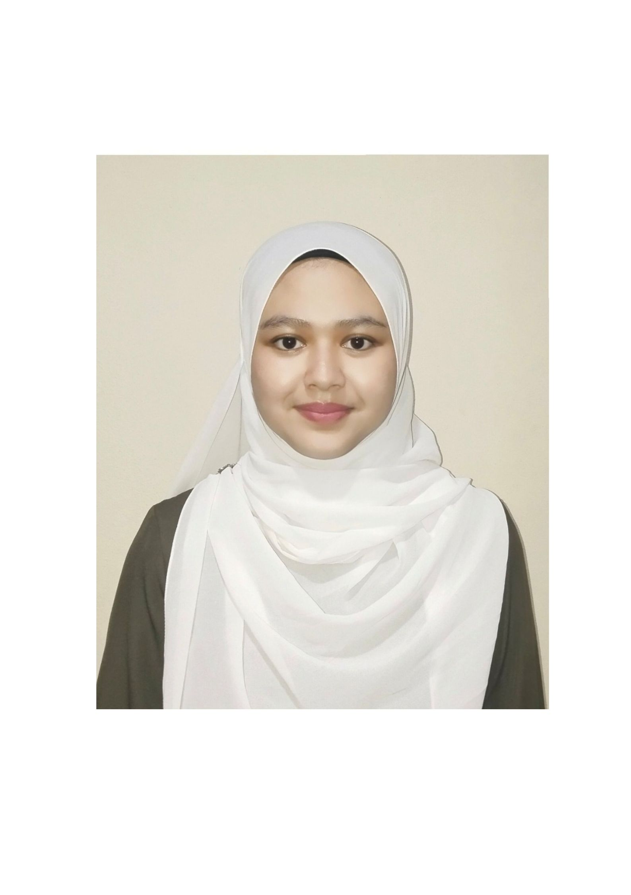

Phone: 011-64388544
Email: mmtzhhh960@gmail.com
GitHub: mmtzhalia
Address: 1893, Jalan Kuala Krai, Batu 11, 16450 Ketereh, Kota Bharu, Kelantan
Motivated and disciplined second-year Food Biotechnology student at Universiti Sains Islam Malaysia (USIM), with a passion for halal sciences and food quality assurance. Seeking a future role as a Halal Executive, where I can apply my academic knowledge and personal values to ensure halal integrity in the food industry. Experienced in online Quran teaching, with strong communication and leadership skills.
Freelance Quran Teacher | Online | 2023–Present
Popfinity – Student Business Initiative | USIM | 2024